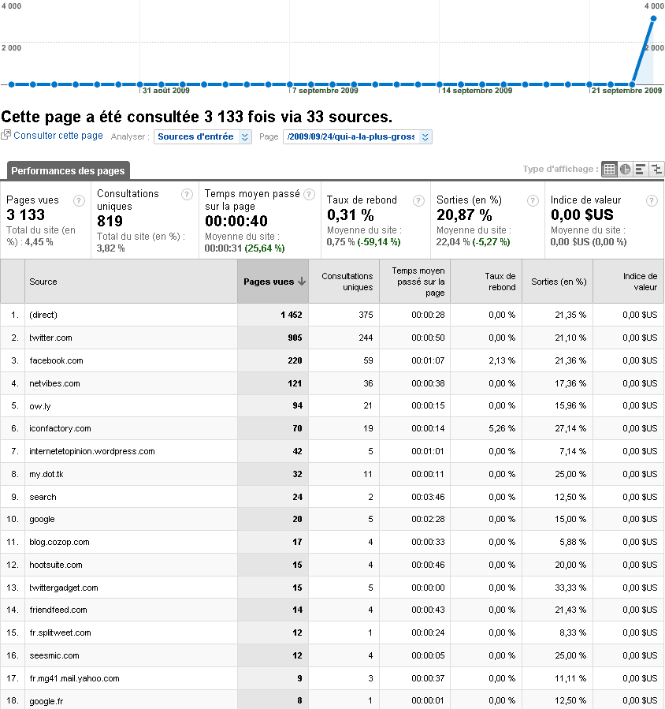

Les mensurations de la quéquette Twitter

kikistats
Moins de douze heures depuis la publication de mon histoire de quéquette mais voici les stats de la nuit pour ceux qui s'intéressent à l'influence croissante des réseaux sociaux comme apporteur de trafic. Données à croiser avec celles que j'ai publiées en août.
Suite | 2009 | Sommaire | Texte publié vendredi 25 septembre 2009